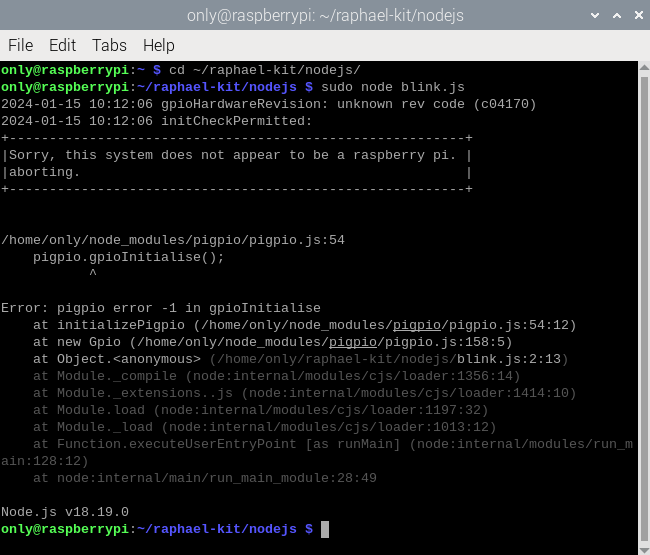

Bemerkung
Hallo, willkommen in der SunFounder Raspberry Pi & Arduino & ESP32 Enthusiasten-Community auf Facebook! Tauchen Sie tiefer in Raspberry Pi, Arduino und ESP32 mit anderen Enthusiasten ein.
Warum beitreten?
Expertenunterstützung: Lösen Sie nach dem Kauf auftretende Probleme und technische Herausforderungen mit Hilfe unserer Community und unseres Teams.
Lernen & Teilen: Tauschen Sie Tipps und Tutorials aus, um Ihre Fähigkeiten zu verbessern.
Exklusive Vorschauen: Erhalten Sie frühzeitigen Zugang zu neuen Produktankündigungen und Vorschauen.
Spezielle Rabatte: Genießen Sie exklusive Rabatte auf unsere neuesten Produkte.
Festliche Aktionen und Gewinnspiele: Nehmen Sie an Gewinnspielen und festlichen Aktionen teil.
üëâ Bereit, mit uns zu entdecken und zu kreieren? Klicken Sie auf [hier] und treten Sie noch heute bei!
Für Pi 5
Die Veröffentlichung des Raspberry Pi 5 hat uns ein leistungsstärkeres Modell gebracht, aber auch einige Änderungen eingeführt, insbesondere beim GPIO. Obwohl er seine standardmäßige 40-Pin-Schnittstelle beibehält, hat sich die Funktionalität aufgrund der Verbindung mit dem neu integrierten RP1-Southbridge-Chip verschoben. Dieser kundenspezifische RP1-Chip übernimmt nun die Peripheriegeräte des Pi 5 und hat zu verschiedenen Kompatibilitätsproblemen geführt. Derzeit ist nur die GPIO Zero-Bibliothek, die offiziell von der Raspberry Pi-Organisation gepflegt wird, vollständig kompatibel. Wir haben eine Reihe von Kursen entwickelt, die sich speziell auf diese Bibliothek konzentrieren.
Für Kompatibilitätsprobleme mit anderen Programmiersprachen, siehe die detaillierten Informationen unten:
Processing
Bei der Verwendung von Processing 4 auf dem Raspberry Pi 5 gibt es Herausforderungen bei der GPIO-Programmierung. Fehler wie „Invalid argument“ und „GPIO pin 17 seems to be unavailable on your platform“ treten während der Ausführung von GPIO-bezogenem Code auf (wie im beigefügten Bild dargestellt). Weitere Einzelheiten finden Sie unter: https://github.com/benfry/processing4/issues/807

Node.js
Node.js nutzt die pigpio-Bibliothek, die derzeit den Raspberry Pi 5 nicht unterstützt. Weitere Informationen finden Sie unter: https://github.com/joan2937/pigpio/issues/589
{kind=link}
Auf einem 64-Bit-System treten bei der Importierung der Raspberry Pi GPIO-Bibliothek Probleme auf, die zu einer Nichtreaktionsfähigkeit führen. Weitere Informationen finden Sie unter: https://github.com/raspberrypi/bookworm-feedback/issues/91.